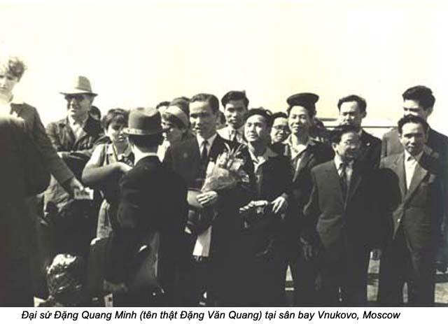

Chương 32

ôi nghe từ đầy dây bên kia có tiếng trả lời:
- Allo!
Giọng nói nửa Pháp nửa Anh, nhưng tôi biết ngay là ba tôi, dù đã hơn hai mươi năm chưa một lần tiếp xúc. Tôi nghĩ xốn xang, nghẹn ngào, chỉ muốn kêu lên thật lớn: “Ba ơi! Con đây”. Nhưng tôi có nén xúc động để bình tĩnh, kính cần hỏi:
- Thưa ông, có phải ông là Đại sứ Minh không?
- Phải, tôi là đại sứ Minh. Ai gọi tôi đây?
Giọng ba tôi trong, pha lẫn tiếng cười nên còn rất trẻ. Tôi thêm:
- Thưa, có phải trước năm 1954, ông là tỉnh uỷ Cần Thơ không? Tên thiệt của ông là Đặng Văn Quang?
Lần này, tôi nghe một tiếng cười nổi lên trong điện thoại tưởng tượng ra hàm răng trắng tươi của ba tôi.
- Đúng rồi. Bây giờ cô phải nói, làm sao cô biết rõ tôi vậy?
- Hồi đó cháu ở Biên Hoà, gần hãng cưa Tân Mai. Cháu cô Bảy Khuê.
- Cô ấy là em một tôi! Vậy, cô có phải là một trong những sinh viên Việt Nam sáng nay ra phi trường đón phái đoàn của chúng tôi không?
Đến đây, tôi chịu hết nổi vì quá xúc động. Tôi nghẹn ngào kêu lên:
- Ba ơi, con đây, ba. Con là Mỹ Dung, con gái của ba nè.
Bên kia đầu dây bỗng im lặng như tờ. Tôi có cảm tưởng ba tôi quá xúc động vì bị bất ngờ đến ngừng tim, nên tôi hốt hoảng nói:
- Ba, ba còn đó không? Ba có làm sao không?
Tôi nghe có tiếng động mạnh như tiếng máy điện thoại rơi xuống bàn, hay xuống sàn. Tôi càng hoảng sơ hơn, vì tưởng ba tôi té xíu. Nhưng tôi chưa biết nên phản ứng ra sao, thì bên kia đầu dây có tiếng của ba tôi:
- Trời ơi! Con gái của ba.
Tôi lại giữ mi lặng. Sự im lặng lần này lâu hơn, những tôi biết ba tôi không đứt tìm đến té xỉu, vì tôi nghe có tiếng khóc. Tôi nghẹn ngào chờ đợi.
Rụt rè, tôi hỏi:
- Mình nói chuyện trong điện thoại được không, ba?
Tôi biết cộng sản luôn luôn rình rập đảng viên của họ. Đảng đã nghe trộm ông Hồ Chí Minh, thì tha gì ba tôi.
- Không, con à. Mình không nên nói nhiều trong điện thoại. - Ba tôi chậm rãi trả lời - Sao con biết ba ở đây vậy con?
Tên của ba trên báo Japan Times. Hình của ba trên hết báo Nhựt. - Tôi đáp với một vẻ tự hào.
- Con ơi, ba rất sung sướng được nghe tiếng con gái của ba! - Ba là tôi ngập ngừng, không nói tiếp. Tôi vội hỏi:
- Con tới gặp ba bây giờ được không? Con biết đã khuya lắm rồi!
- Con đi với ai? - Ba tôi hỏi bằng một giọng nghiêm nghị.
- Con đi với thẳng nhỏ của con. Mà bây giờ nó đang ngủ. Con sẽ kêu người giữ nó!
- Chỗ lạ mà con có thể tin người ta giữ con cho con sao?
Tôi vui vẻ trấn an ba tôi:
- Ông ngoại đừng lo. Con sẽ gọi người giữ trẻ trong khách sạn trông chừng cháu của ông.
Ba tôi căn dặn:
- Cứ đi thẳng lên phòng của ba, đừng ghé quầy tiếp khách, cẩn thận nhìn trước ngó sau, khi lên thang máy đến phòng của ba.
Ngoài ra, chúng tôi đồng ý là vẫn giữ lý lịch giả. Nếu tình cờ gặp ai trong phái đoàn, thì tôi là một sinh viên Việt Nam ở Nhựt vừa tới thăm người đại diện của Việt Nam. Cách che giấu này cũng hợp lý, vì chỉ có Việt kiều yêu nước hay gián điệp của Việt Cộng mới dám tới gặp ông đại sứ vào cái giờ khuya khoắt này. Ttn không phải Việt kiều Y6u Nước mơ cũng không phải là gián điệp Việt Cộng, nhưng nếu tôi phải hoá trang với bộ râu để biến thành Hồ Chí Minh mà được gặp ba tôi lúc bấy giờ, thì tôi cũng phải hạ mình làm thôi.
Tôi để nhẹ điện thoại xuống, như sợ đặt mạnh quá thì ba tôi biến mất. Thương cho người chồng, người cha cô đơn. Mà cũng thương cho người làm cách mạng, mà chính bản thân ông, cũng chưa được tự do, khi đảng của ông đã “giải phóng miền Nam”

Một người đàn bà Nhựt có nhiệm vụ trông chừng Lance, tới phòng tôi trong bộ y phục mầu trắng. Bà trông gọn gàng, vui vẻ rất lịch sự, nhã nhận. Nhìn Lance ngủ say, bà gật đầu ha rồi mở của cho tôi đi.
Ngồi trong taxi trên đường đến khách sạn Prince, tôi suy nghĩ liên miên. Tôi sẽ gặp lại ba tôi sau hơn hai mươi năm xa cách. Rồi cùng một lúc, tôi cũng sẽ gặp một chánh trị gia đại diện cho chánh phủ mà trong thâm tâm tôi vẫn coi là những người cướp nước tôi. Nhưng mặt khác, tôi lại ước mong ba tôi sẽ là ngọn đèn leo lét cho một niềm hy vọng; hy vọng cho một Việt Nam tự do, thái bình, và người dân được no ấm, hạnh phúc.
Ra khỏi taxi, tôi nhanh nhẹn bước vào khách sạn, đi thẳng lên phòng ba tôi như một người khách đã quen. Ba tôi vụt mở cửa khi tôi chưa kịp gõ tới tiếng thứ ba.
- Trời ơi!
Ba tôi thốt kêu, rồi một tay ôm tôi thật chặt, một tay khép lại. Ông ôm tôi, rồi trận mưa hôn bắt đầu phủ lên tóc, lên mặt, hai cánh tay, hai bàn tay tôi, như 20 năm về trước mỗi lần đi công tác xa về. Ba tôi có thói quen hôn tôi, Hải Vân và Hoà Bình.
Rồi hai cha con tôi ngồi xuống cái ghế salon dài. Ba tôi bỏ kiếng ra, nắm lấy hai vai tôi, rồi nhìn tôi không chớp mắt.
- Con ơi, con cưng của ba, lâu quá rồi, con ơi!
Mặt ba tôi ướt đầm đìaa. Tôi lău nước mắt cho ông, mà mắt tôi khô. Tôi cảm động đến nghẹn lại, chỉ đưa tay rờ mái tóc trên vầng trán cao. Ba tôi vẫn chải đầu rẽ tóc qua bên mặt. Bây giờ tóc của ông đã ngả mầu. Hai mươi nam xa vợ, xa con! Hai mươi năm sống xa thế giới văn minh! Ngoài mái tóc bạc, không biết tình của ba tôi dành cho gia đình có còn nồng ấm như xưa không?
Ông chậm rãi nói nho nhỏ:
- Ba không có lời nào để diễn tả đủ thứ tình cảm, nhớ thương đối với với má, chị em con và Hải Vân.
Ba tôi nghẹn ngào khi nhắc đến Hải Vân, ông im lặng như để nghiêng mình trước vong lính của thằng con chết yểu. Tôi siết tay ba tôi để chia sẻ nỗi đau thương. Ít nhứt ba tôi và tôi, chia sẻ được cùng một nỗi đau, và cũng cảm thấy nỗi trống vắng lớn lao vì sự ra đi quá sớm của em tôi. Ba tôi thở dài, buồn bã nói:
- Buồn quá, ba không muốn nhắc tới Hải Vân nữa.
VBa tôi vừa nói vừa nhìn vào khoảng trống. Tôi thắc mắc:
- Con không hiểu ý ba.
- Ba được cấp trên cho biết Mỹ giết Hải Vân.
Tôi giựt mình, nhưng không dám nhích xa khỏi ba tôi, khi tôi thấy hận thù hiện lên trong đôi mắt của người cha, tin rằng con mình bị kẻ thù hãm hại.
- Ba muốn tìm hiểu sự thật hay ba muốn chấp nhận lời bịa đặt?
Tôi vừa nói vừa nhìn thẳng vào mặt ba tôi, rồi tiếp:
- Con không muốn cãi với ba ngay buổi gặp đầu tiên sau hơn mươi năm xa cách. Nhưng, con phải nói thật, là cấp chỉ huy của ba quen nghề nói láo. Em con không bị ai giết hết, chỉ là một tai nạn!
Ba tôi liền đổi đề tài:
- Hãy nói về má con, về con và các chị em con cho ba nghe!
Mắt ba tôi sáng ngời trở lại khi ông nhắc đến vợ con.
- Mà khoẻ mạnh, má mong tin ba lắm. Mấy chị mấy em của con bình yên. Chị Kim, chị Cương đã có chồng; chị Cương có hai con gái. Hoà Bình có một thằng con trai bằng tuổi thằng con của con, còn Minh Tâm thì mới chân ướt chân ráo trên đất lạ, cũng như mọi người khác, phải đi học để hội nhập đời sống. Con biết, Hoà Bình sẽ nhớ Việt Nam hơn mọi người trong gia đình. Con cũng như nó. Con cứ chiêm bao thấy trở về Việt Nam. Con còn nghe thoang thoảng mùi lúa chín ngoài đồng trong ngủ. Mầu vàng rực của những trái quít chín trong vườn ông ngoại bà ngoại vẫn ám ảnh con. Con còn cảm thấy cái mát rượi của nước sông trên da thịt con. Con vẫn mơ ước cái không khí đầm ấm bình yên trong ngôi làng của ông ngoại bà ngoại. Con toàn chiêm bao thấy quê hương thôi, ba ai!
Nghe tôi say sưa nói về quê hương Việt Nam, ba tôi vui vẻ mắt sáng ngời, nắm chặt lấy tôi, nói:
- Được như vậy quý lắm, con à.
Thấy ba tôi vui, tôi trả lời cái chết của Hải Vân:
- Ba à, con muốn cho ba biết chắc chắn là không có ai giết rm con hết. Hải Vân là người chiến sĩ, dù em chưa kịp ra trận. Em là phi công của Quân Lực Việt Nam Cộng hoà. Em chết vì tai nạn mà ai cũng đã biết rõ như vậy. Cả gia đình đều biết như vậy. Con xin ba hãy tin sự thật của gia đình, cha đừng nghe lời tuyên truyền bậy bạ của cộng sản.
Ba tôi bỗng đập bàn, nói lớn:
- Không, không phải là một tai nạn như con tưởng. Chúng dàn cảnh ra như vậy. Chúng nó cũng là bọn bắt ép má con phải bỏ Sài gòn mà đi, khi ba sắp sửa trở về. Làm sao con biết được mánh khoé lừa bịp của chúng nó.
Tôi cố giữ bình tĩnh:
- Ba tin là chị của nó để yên cho quân nào “giết” em mình sao?
Tôi đâu có nói được chính tôi là người đi cầu cạnh CIA cứu má tôi, chớ nào có ai “ép” má tôi rời Sài gòn!
Ba tôi giữ im lặng một chút, rồi rót một ly nước đầy để uống. Không biết ông uống nước để dằn cơn giận, hay để lấy thêm sức cãi vã với đứa con gái cứng đầu cứng cổ. Uống xong, ông nhìn tôi, nở một nụ cười thân thiện, nói:
- Hai chục năm trước, ba đã hình dung ra, con sẽ là con một con người như thế nào khi con lớn. Bấy giờ, ba thấy đúng như vậy!
ôi dịu dàng nói:
- Con rất tiếc, nếu con đã làm cho ba thất vọng về con.
Ba tôi liền đáp:
- Không, ba không thất vọng về con. Ba chỉ muốn con của ba thương ba và tin tưởng ba thôi.
Tôi vòng tay ra sau lưng ba, rồi siết chặt thật lâu. Rồi vui vẻ nói:
- Con rất mừng khi nghe ba nói vậy. Bấy giờ ba cho con biết về anh Khôi của con đi.
Mắt ba tôi lại sáng ngời, mặt ba rạng rỡ khi tôi nhắc đến anh Khôi. Từ ngày anh còn nhỏ, ba tôi đã cưng anh nhứt nhà, đã hãnh diện về anh. Ông vui vẻ nói:
- Anh con đang sửa soạn lên đường vào Nam. Khi ba về Việt Nam sẽ ghé Hà Nội đón anh hai con cùng vào Nam. Anh nhớ con nhiều nhứt đó!
Tôi nửa đùa nửa thật nói:
- Không biết ai nhớ ai hơn ai, ba ạ!
Ba tôi nhìn tôi đăm đăm, rồi hỏi:
- Chừng nào con về thăm nhà?
Tôi thầm tự hỏi có nên nói thật ý nghĩ của mình không, rồi gượng đáp:
- Không, ba à. Con chỉ có can đảm chịu đựng với những gia đình, những mất mát trong chiến tranh, mà còn không có lòng dạ nào chứng kiến người dân Việt sống nhục nhã dưới chính quyền Hà Nội.
Tức thì mặt ba tôi sầm lại, nhưng ông cố nén cơn giận, nói:
- Ba muốn đón má về với ba.
Tôi đáp ngay:
- Đó cũng là ước nguyện của má.
- Vậy thì con tìm cách đưa má qua Paris gặp ba.
Tôi biết Paris là nơi rất quen thuộc của nhiều người Việt thân Cộng, cũng là nơi hoạt động của Cộng sản Bắc Việt, nơi đó ba tôi có nhiều đồng chí, bạn bè.
Tôi mỉm cười hứa hẹn:
- Dạ, con sẽ cố gắng hết mình.
Ba tôi vui vẻ:
- Cố gắng cho ba nhen con.
Tôi trịnh trọng đáp:
- Lời hứa của người họ Đặng là một lời danh dự, ba à.
Mỉm cười một cách hài lòng, rồi ba tôi nhìn đồng hồ tay. Lúc ấy tôi mới thấy chiếc đồng hồ Omega thật đẹp. Ông bào, tôi đã đến lúc phải về với cháu ngoại của ông. Tôi chưa muốn xa ba tôi ngay, nhưng thấy ông có vẻ mệt, và biết rằng hôm sau ông phải dậy sớm để dự một buổi tập họp đông đảo tại một nơi trong thành phố. Tokyo. Tôi bỗng thấy khó chịu trong người. Ba tôi, một người rất thân của tôi, lại có mặt trong một cuộc biểu tình chống chiến tranh, chống bom nguyên tử. Tôi bât giác mỉm cười bâng quơ. Ba tôi thấy tôi cười thì hỏi lại sao tôi cười? Tôi liền đáp:
- Cha con mình bấy giờ khác nhau quá.
Khi tôi trở về khách sạn, người đàn bà Nhựt giữ trẻ vừa ra khỏi phòng thì ba tôi gọi, ông không chỉ muốn biết xem tôi về nhà an toàn không, mà còn nói:
- Con à, lần tới, cha con mình đừng nói chuyện chánh trị nữa nhen con. Hãy nói về gia đình thôi. Con cho ba biết về má, về chị em của con, về mấy người con rể của ba. Thời gian của cha con mình ngắn ngủi quá con à.
Nhưng tôi không chịu, liền đáp:
- Suốt đời chúng con thiếu ba chỉ vì chánh trị. Ba xa chúng con hai mươi năm. Ba biết không? Gia đình ly tán vì chánh trị. Chánh trị làm vợ xa chồng, con xa mẹ. Đời sống của mình đã bị chánh trị cầm đầu, mình phải nói tới chánh trị, ba à.
Ba tôi vừa cười vừa nói:
- Ba nhớ con gái cưng của ba dễ thương, thông minh, cứng đầu, nhưng ba không ngờ con ba lại dữ thế này… Nhưng bà biết con thương ba là đủ rồi.
Tôi đổi sang hướng khác.
- Ba, con không có giận ba, mà con giận đảng Cộng sản, giận cái tập đoàn của những người đã phản bội cách mạng thôi.
Nói xong, tôi chờ đợi cơn giận dữ của ba tôi. Nhưng ông bình tĩnh trả lời:
- Ba mong rằng sẽ có dịp cho con thấy cái mặt tốt đẹp của cách mạng. Rồi con sẽ vui vì thấy ba đi đúng đường.
- Con lúc nào cũng hãnh diện vì ba đã can đảm chiến đấu chồng ngoại bang, đã từng vô tù ra khám, từng bị đầy ra Côn đảo. Nhưng con không thể chấp nhận sự có mặt của tập đoàn cộng sản Hà Nội ở miền Nam.
Tôi nói một hồi dài như sợ bị ba tôi ngắt lời. Tôi nghe tiếng cười của ba tôi, rồi ông nói:
- Thì con cứ tiếp tục hãnh diện về ba đi. Tin rằng luôn luôn ba đem hết sức ra để phục vụ miền Nam. Con có biết không? Không chỉ chúng ta thắng cuộc chiến này, mà ngay cả người Mỹ thắng nữa…
Tôi vội ngắt lời:
- Có thể đó là mấy thằng trốn lính, mấy thẳng phản chiến, chớ đâu phải toàn dân tộc Mỹ. Con đau đớn lắm khi miền Nam của xon đã mất.
Tôi nghe có tiếng cười của ba tôi, rồi ông nói:
- Nghe con nơi mà thấy vui vui, vì lạ tai.
Tôi cũng cười theo và chọc ba tôi:
- Con tin là không có ai dám trả trêu với ông đại sứ của ntr Giải phóng Miền Nam như con đâu. Nhưng con là con của ba, nên mới dám lợi dụng ba như vậy.
- Con thì tha hồ lợi dụng ba bất cứ lúc nào cũng được.
- Thiệt vậy hả ba?
- Ba nói thật.
- Con có một chuyện muốn ba giúp. Ba phải hứa là phải cố gắng hết sức nhen.
Ba tôi im lặng chờ đợi. Tôi nói tiếp:
- Hồi nãy ba nói quê hương mình hết giặc rồi. Hết giặc có nghĩa là hoà bình, xoá bỏ hận thù, lá tha thứ, là thương yêu nhau “trong tinh thần của cách mạng” phải hông?
Tôi nghe ba tôi thở dài; chắc ông biết ông cho tôi một thước, tôi lại đòi một cây số.
- Con muốn nhắc tới những người tù binh Mỹ con bị Hà Nội cầm tù. - Tôi nghẹn ngào nói.
Thật ra vấn đề này tôi đâu có định nói với ba tôi, nhưng khi ông nói ông cho tôi lợi dụng ông, thì tôi chụp ngay cơ hội.
Ba tôi ngập ngừng đáp:
- Con à, đó là một vấn đề ba không có thẩm quyền nói tới.
Giọng ông trở nên nghiêm nghị, chậm rãi như giọng nói của một nhà ngoại giao tuyên bố trước công chúng. Tôi cũng lấy giọng nghiêm trang đáp lại:
- Con biết, nhưng con không có nói với một người có quyền hành, mà con nói với một người mà ai ai cũng mến thương, quý trọng, vì tình yêu của người đó cho dân tộc và gia đình. Con nói, với một người có trái tim, có kinh nghiệm, đã từng bị người ta nhốt vô tù vì lý tưởng. Con muốn những người tù binh Mỹ này được trả tự do để họ được về với gia đình họ, ba à. Bây giờ con lớn rồi, nhưng con vẫn còn tin ở sự mầu nhiệm, mà sự mầu nhiệm nhiệm đó chỉ có từ con tim của những người đàn ông như ba!
Tôi nghe ba tôi khẽ thở dài, rồi ông nói bắng một giọng lạnh lùng:
- Con à, tại sao con lại dằn vặt con như vậy? Chuyện không liên quan gì đến cha con mình. Không liên quan gì tới 20 năm chia cách của gia đình minh.
- Ba à, làm con của ba, con hiểu thấu được thể nào là lớn lên không có cha, con codn được biết cái sung sướng vô tận khi gặp lại ba. Con biết ba sung sướng biết chừng nào khi ba nói chuyện với con. Con muốn ba giúp cho những người đàn ông. đàn bà và con trẻ được hưởng cái sung sướng mà mình đã được.
- Ba không thể nói đến chuyện này nữa.
- Ba có thể!
- Con không hiểu sao?
- Con hiểu, nhưng con không chấp nhận là ba của con lại từ chối một dịp đem hạnh phúc đến cho người khác. Ba mới là người biết tươi cười khi thấy người đàn ông đoàn tụ với gia đình mình sau một thời gian xa cách. Ba mới là người lấy tay chùi nước mắt khi khi thấy một người từ liệng cái nạng để ôm lấy con của mình. Dù là hình ảnh của ba con. Nếu ba không có dậy con đừng ích kỷ, con không có dùng thì giờ quý báu này của cha con mình mà nói chuyện hạnh phúc của người ta. Con nghĩ, ba hiểu con mà.
Tôi nói một hơi không cho ba tôi nói. Nhưng ba tôi ngắt lời:
- Con à, nghe ba nơi đây. Ba thương con vì con không ích kỷ, nhưng con phải hiểu, trên ba con có đảng. Nó không có giản dị như con tưởng.
- Con đâu có kêu ba mở chuồng thả những tù binh Mỹ. Con chỉ xin ba tạo ảnh hưởng những người có quyền lực trong vấn đề này. Ba làm cho Liên Xô mê Mặt trận giải phóng miền Nam được, thì vì những gia đình của tù binh, ba làm cho bác Lê Duẩn mê ba đi.
- Ba nghĩ mình không nên nói chuyện này trong điện thoại. - Ba tôi nói.
- Ba làm ơn nghĩ đến những gì con nói nhen.
- Ba sẽ nghĩ đến tất cả những gì con nói với ba.
- Con muốn ba nghĩ đến vợ con của những người Mỹ mất tích mỗi khi ba nghĩ đến má và tụi con. Sự suy nghĩ của ba quan trọng lắm, nó thể thay đổi cho những người bị tù đầy.
- Ba thương con lắm con có biết không. - Ba tôi nói.
- Con thương ba nhiều lắm.
Tới đây, ba tôi đổi đề tài, ông hỏi tôi:
- Người ta nói cho ba biết chồng con là người Nam Tư. Có phải không?
- Dạ, anh là người Mỹ gốc Nam Tư. Tình yêu nói nhiều thứ tiếng lắm, ba à.
Chúng tôi cùng cười vang trong điện thoại. Rồi ba tôi ngập ngừng:
- Ba mừng. Ba chỉ sợ…”
- Ba sợ con có chồng người Mỹ vì phương tiện chớ gì? Má con nói giòng họ Đặng của mình mùi mẫn lắm.
Chúng tôi cười, tiếng cười đem lại cho tôi những kỷ niệm vui tươi của gia đình lúc tôi còn nhỏ. Chúng tôi chúc nhau ngủ ngon năm sáu lần rồi mới chịu ngừng.